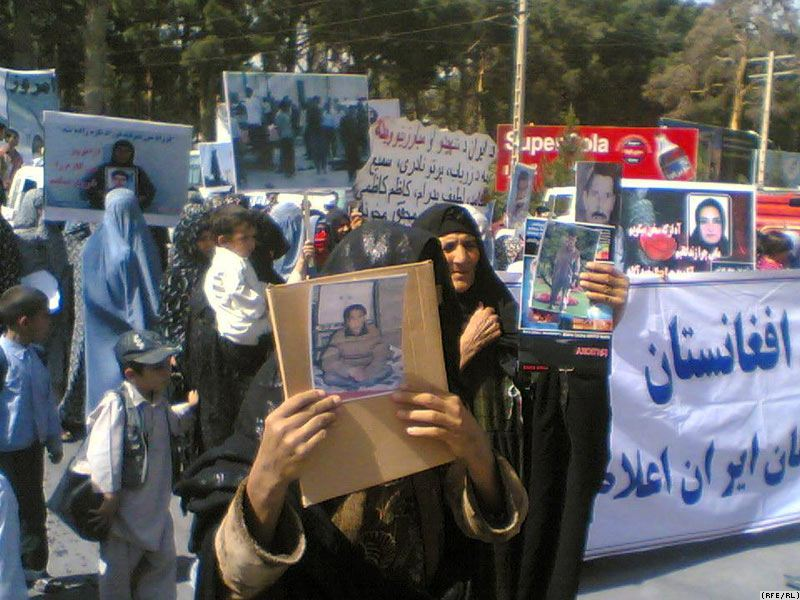
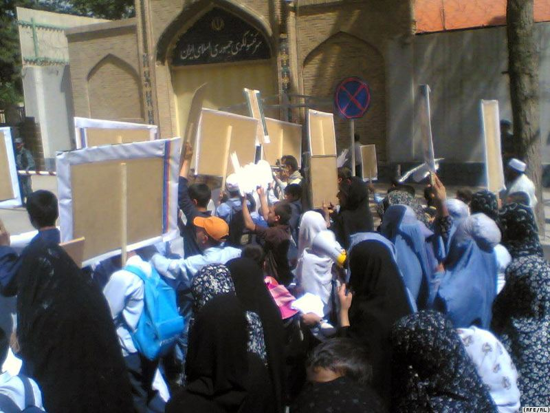

|
|
تظاهرات صدها تن از زنان افغانستان در مقابل کنسولگری ايران در هرات
جمعه31 اردیبهشت 1389
رادیو فردا- صدها تن از زنان افغانستان روز پنجشنبه در برابر سرکنسولگری جمهوری اسلامی در هرات تظاهرات کرده و نسبت به اعدام زندانيان افغان در ايران، اعتراض کردند.

تظاهرکنندگان که پلاکاردهايی در دست داشتند، از رييس جمهوری افغانستان، حامد کرزی خواستند پرونده زندانيان افغان در ايران را بررسی کرده و پرونده اين افراد را برای بررسی به محاکم قضايی افغانستان بسپارد.

هرچند نيروهای امنيتی در حال حفاظت از سرکنسولگری جمهوری اسلامی حضور داشتند، اما تظاهرات کنندگان با پرتاب سنگ و دادن شعار، خشم خود را نشان دادند.
تظاهرات مشابهی نيز چندی پيش در کابل برگزار شد.